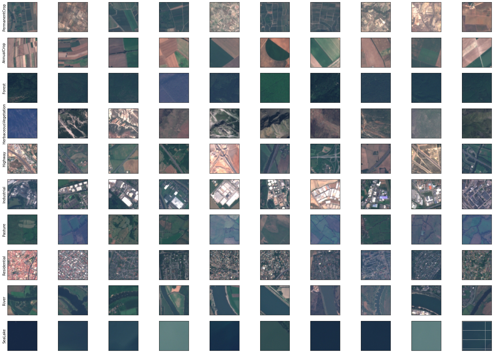
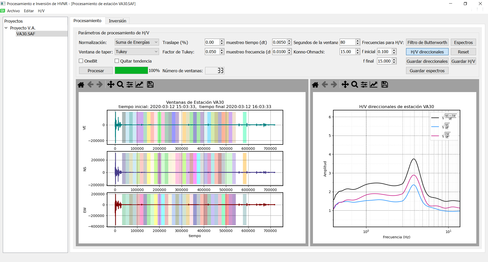
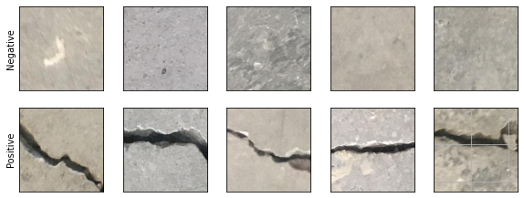
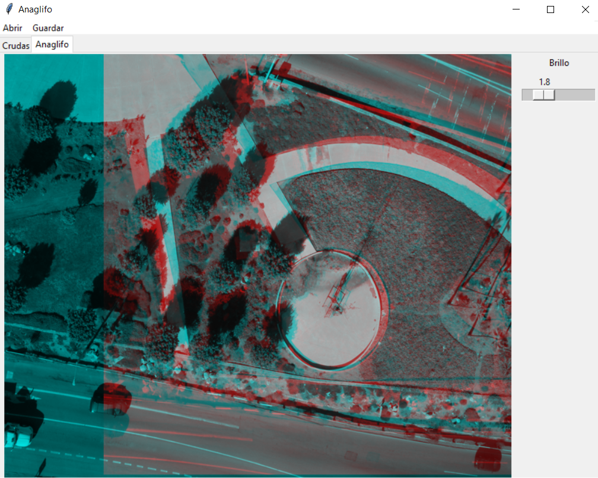
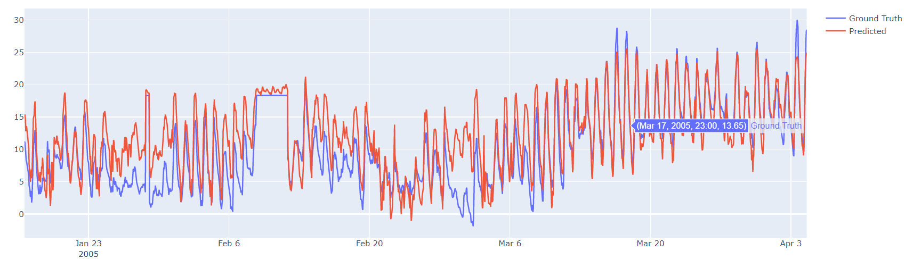
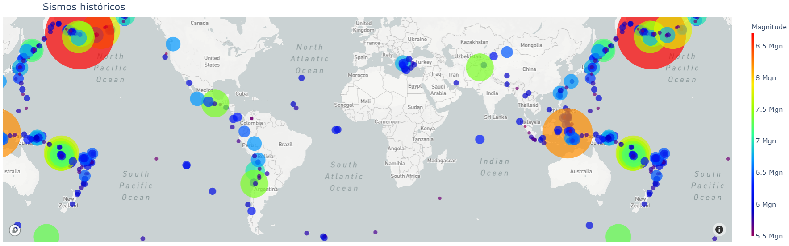

Software para procesar señales de ruido sísmico ambiental e invertirlas con la técnica de optimización Particle Swarm Optimization. La inversión se hizo suavizada tipo Occam.

Detección de fracturas en imágenes de concreto. La detección se hace usando una máquina de soporte vectorial mediante extracción de rasgos globales y análisis de componentes principales.

Clasificación de imágenes de rocas obtenidas a partir de web-scrapping. La clasificación se uso usando una red neuronal convolucional y transferencia de aprendizaje.

Interfaz de usuario que genera anaglifos a partir de un par estereoscópico.

Predicción de datos de temperatura con datos de sensores químicos que monitorean la calidad del aire.

Clusterización de sismos históricos dada su magnitud, profundidad focal y ubicación geográfica.